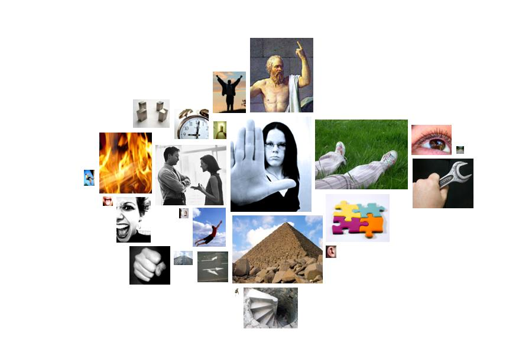

bush-inaugural.txt
  restraint
restraint prescribed, determined, reign, imperative, requirement, policy, necessary, must, jailed, require, policies, must, prison, control, must, obligations, necessary, determined, determined, must, must, bound, must, captives
 passivity
passivity quiet, repose, security, secured, securing, quiet, deaths, security, security, retirement, died, peaceful, weary
 timelessness
timelessness century, eternally, permanent, permanent, forever, centuries, permanent, century
 moral_imperative
moral_imperative justice, law, honor, duties, rights, honorable, law, duty, moral, right, rights, justice, rights, should, justice, honor, duties, honored, honor, duty, rights, conscience, justice, rights, unjust, justice, justice
social_behavior
guests, commitments, sworn, excuse, depends, proclaimed, proclaimed, calling, protection, speaks, help, excuse, influence, influence, confidently, protect, encourage, guide, participation, appeal, call, accept, accept, speaks, excuse, counsel, depend, help, speak, asked, granted, accepted, accepted, helping, ask, promise, social, promise, depends, conduct, service, message, response, confidence, confidence, declared, declaration, said, proclaims
 fire
fire fire, kindles, lit, fire, fire, warms, burns, fire
 abstraction
abstraction distinguished, guests, consequential, determined, defined, history, source, history, beliefs, ideals, chosen, may, different, concentrated, considerable, cause, chosen, resolve, choice, choice, belief, know, history, defined, ideals, possibility, know, know, know, believe, themselves, know, learn, them, know, cause, idealistic, idealism, believe, evidence, determined, real, choice, cause, idealism, determined, ideal, definition, ideal, truths, true, ideals, ideal, cause, cause, judge, choice, cause, known, purposes, them, define, history, choices, consider, chosen, chooses, meant, history, history, meant, something, something, history, may, may
 instrumental_behavior
instrumental_behavior use, success, founding, maker, achievement, goal, task, goal, find, attain, make, work, task, use, test, found, making, success, goal, effort, task, achieved, find, efforts, reach, work, work, work, soldiers, make, work, work, find, laboring, build, ownership, ownership, businesses, preparing, making, make, built, carry, founders, soldiers, tested, achievements
 depth
depth deep, deepest, deepest, under, under, under
 aggression
aggression resentment, hatred, murder, violence, destructive, threat, break, hatred, resentment, tyrants, attacks, threats, grudging, doubt, enemies, enemies, defeat, fight, fighting, enemies, attack
anxiety
avoiding, dangerous, fear
 glory
glory great, great, triumphs, wealth, great, greater, great, pride, triumph, greatest
 descent
descent fellow, fellow, fellow, fellowship
 vision
vision witnessed, seen, watch, seen, seen, image, seen, sees, witnessed, seen, seen, vision, look, see, viewpoint, visible, witness, watch
 order
order measure, standards, standards, order
 temporal_references
temporal_references durable, hour, times, years, years, years, then, now, every, now, time, every, when, when, every, every, time, decades, ever, time, every, every, today, when, today, time, now, time, every, every, every, yesterday, today, time, every, when, whenever, when, when, when, now, ancient, when, time
 random_movement
random_movement expansion, wave, wave
 height
height heaven, growth, highest, hunger
 unknown
unknown unlimited, odd
 ascent
ascent arise, mount
 sound
sound voice, heart, heart, bell, sounded
 taste
taste source
 narcissism
narcissism arms, arms, eyes, faces, heart, hand, heart
 voyage
voyage shipwreck, journey
 hard
hard hard, hardest
guests, commitments, sworn, excuse, depends, proclaimed, proclaimed, calling, protection, speaks, help, excuse, influence, influence, confidently, protect, encourage, guide, participation, appeal, call, accept, accept, speaks, excuse, counsel, depend, help, speak, asked, granted, accepted, accepted, helping, ask, promise, social, promise, depends, conduct, service, message, response, confidence, confidence, declared, declaration, said, proclaims